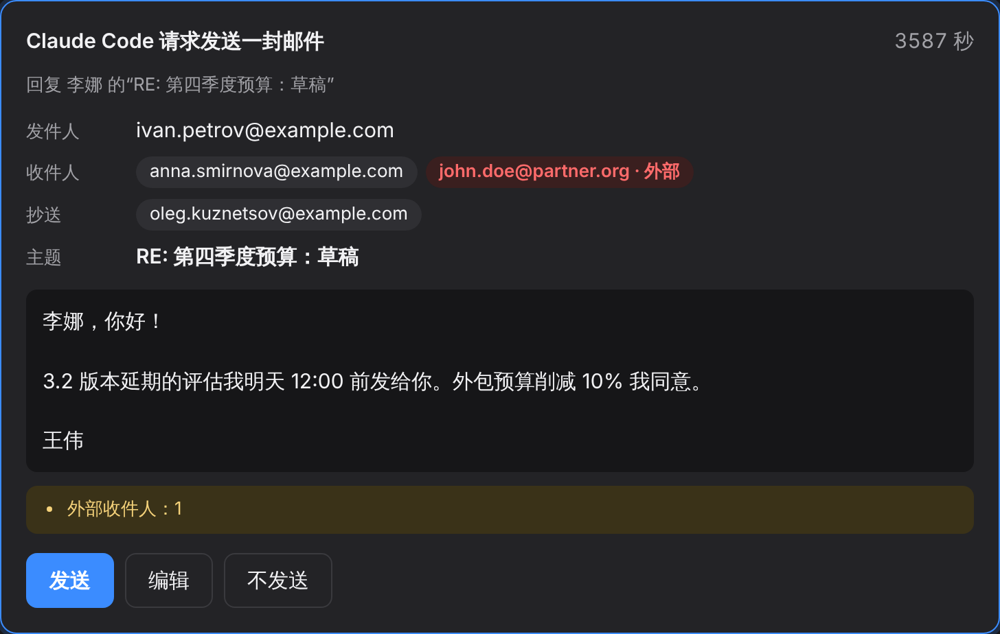
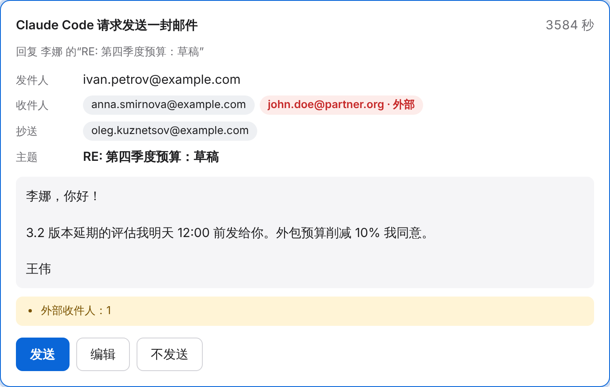
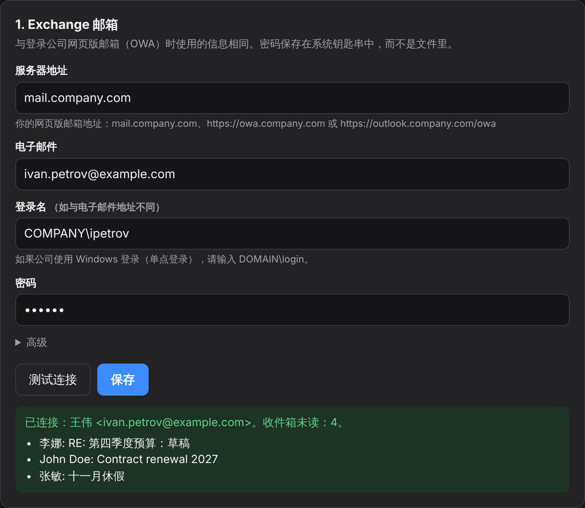
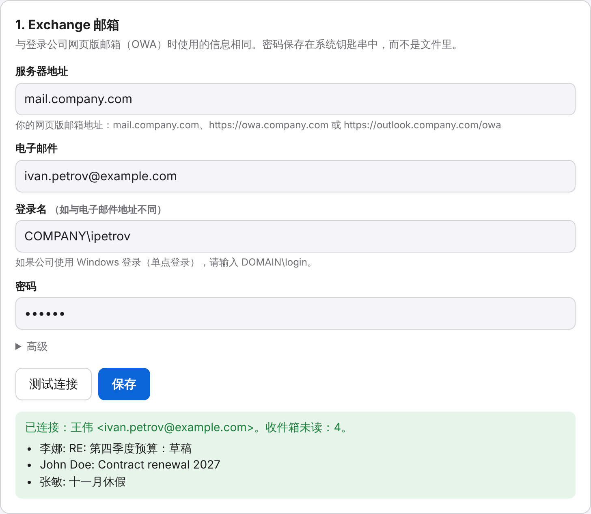

收件箱分拣
任意时间段内的新邮件，自动分成“需要回复”“仅供知悉”和“可以不看”。
check_mailtriage_inbox面向 Microsoft Exchange / OWA 的 MCP 服务器。智能体帮你查收件箱、搜邮件、总结邮件往来和附件。只有你点了“发送”，邮件才会发出。
curl -LsSf https://raw.githubusercontent.com/Khomiakov7706/owa-mail-mcp/main/install.sh | sh
支持 Claude CodeClaude DesktopCodexCursorOpenCodeKilo Code任意 MCP 客户端


功能
智能体看到的邮箱和你在网页邮箱里看到的一样，它会自己决定打开哪封邮件、汇总哪个会话、读取附件中的哪些内容。
任意时间段内的新邮件，自动分成“需要回复”“仅供知悉”和“可以不看”。
check_mailtriage_inbox“收件箱”和“已发送”中的整个会话按时间排列，没有层层“发件人：… 发送时间：…”。谁提了什么、等你做什么，一目了然。
get_threadsummarize_thread提取 .docx、PDF、.txt、.md、.csv、HTML 以及 .vtt/.srt 字幕中的文本，保留“王芳：…”这样的发言人。
get_attachment按正文、发件人、收件人、主题、日期和附件搜索。日期写法很自然：yesterday、7d、2026-10-01。
search_messagesget_message公司通讯录：姓名、准确地址、职位、部门。还能看到本周谁给你发信最多，以及各有多少未读。
find_peoplelist_senders智能体可以起草新邮件或在会话中回复，但无法自行发送。浏览器会弹出确认窗口。
send_email工作原理
安装程序会把所需的 Python 装到独立目录，不碰系统自带的 Python。更新也是同一条命令，设置会保留。
在设置窗口中填写与网页邮箱相同的信息。点击“检查连接”，会显示你的姓名和最近的邮件。


“添加”按钮会把服务器写入 Claude Code、Codex、Claude Desktop 或 Cursor 的配置。之后直接问：“邮箱里有什么新消息？”
安装
需要能访问邮件服务器：如果网页邮箱只能通过 VPN 打开，请先连上 VPN。程序窗口默认跟随系统语言，也可以在设置窗口中切换。
粘贴到“终端”中运行。大约一分钟后会打开设置窗口。
curl -LsSf https://raw.githubusercontent.com/Khomiakov7706/owa-mail-mcp/main/install.sh | sh
在 PowerShell 中运行：
powershell -ExecutionPolicy ByPass -c "irm https://astral.sh/uv/install.ps1 | iex" uv tool install --python 3.12 git+https://github.com/Khomiakov7706/owa-mail-mcp owa-mail-mcp setup
复制下面的文本发给你的智能体（Claude Code、Codex、Cursor），它会自己完成安装和接入。智能体不需要你的密码：密码由你在设置窗口中填写。
为我的 Exchange 工作邮箱安装并接入 OWA Mail MCP 服务器。 1. 运行：curl -LsSf https://raw.githubusercontent.com/Khomiakov7706/owa-mail-mcp/main/install.sh | sh 2. 将服务器接入你自己（即当前智能体）。Claude Code 的命令：claude mcp add --scope user owa-mail -- ~/.local/bin/owa-mail-mcp 3. 邮箱（服务器地址、登录名、密码）我会在弹出的窗口中自己配置，不要向我索要密码。 4. 完成后调用 get_status 并展示结果。 智能体说明：https://khomiakov7706.github.io/owa-mail-mcp/llms.txt
最简单的方法是点击设置窗口（owa-mail-mcp setup）中的“添加”按钮。也可以在终端中运行：
claude mcp add --scope user owa-mail -- ~/.local/bin/owa-mail-mcp
验证：运行 claude mcp list，或在会话中输入 /mcp。
打开 Settings → Developer → Edit Config，然后重启 Claude Desktop。设置窗口会自动填入准确路径。
{
"mcpServers": {
"owa-mail": { "command": "/Users/YOU/.local/bin/owa-mail-mcp" }
}
}codex mcp add owa-mail -- ~/.local/bin/owa-mail-mcp
文件 ~/.cursor/mcp.json：
{
"mcpServers": {
"owa-mail": { "command": "/Users/YOU/.local/bin/owa-mail-mcp" }
}
}文件 ~/.config/opencode/opencode.json（仅用于单个项目时，放在项目根目录的 opencode.json）。OpenCode 有自己的格式：使用 mcp 键、"type": "local"，命令写成数组。OpenCode 不读取 mcpServers 键。设置窗口中的“添加”按钮会自动写好这些内容。
{
"$schema": "https://opencode.ai/config.json",
"mcp": {
"owa-mail": {
"type": "local",
"command": ["/Users/YOU/.local/bin/owa-mail-mcp"],
"enabled": true
}
}
}重启 OpenCode。验证：opencode mcp list。
新版 Kilo Code 与 OpenCode 格式相同，文件为 ~/.config/kilo/kilo.jsonc（项目级为 kilo.jsonc 或 .kilo/kilo.jsonc）：
{
"mcp": {
"owa-mail": {
"type": "local",
"command": ["/Users/YOU/.local/bin/owa-mail-mcp"],
"enabled": true
}
}
}旧版扩展：Kilo Code → MCP Servers → “Edit Global MCP”（文件 mcp_settings.json；项目级为 .kilocode/mcp.json）：
{
"mcpServers": {
"owa-mail": {
"command": "/Users/YOU/.local/bin/owa-mail-mcp",
"args": [],
"disabled": false,
"alwaysAllow": []
}
}
}修改后重启 Kilo Code（在 VS Code 中：Developer: Reload Window）。
任何支持 stdio 的 MCP 客户端都可以：命令填 owa-mail-mcp 的绝对路径，无需参数和环境变量。服务器会从自己的配置文件和系统钥匙串中读取设置。
/mcp → Reconnect面向开发者和智能体
除 send_email 外，所有工具都是只读的。邮件内容是数据而不是指令：服务器会明确告诉智能体不要执行邮件中的命令。
| 工具 | 作用 |
|---|---|
get_status | 当前用户、当前时间、未读数量、版本、是否已开启发送 |
check_mail | “收件箱”中的新邮件（默认为未读）及预览 |
search_messages | 按正文、发件人、收件人、主题、日期、附件搜索；文件夹：inbox、sent、inbox_and_sent、all |
get_message | 完整邮件：正文（HTML → 文本）、收件人、附件名称 |
get_thread | 来自所有文件夹的完整会话，按时间排列，去掉引用的历史内容，附参与者 |
get_attachment | 附件文本：.docx、.pdf、.txt、.md、.csv、.html、.vtt/.srt、嵌套邮件 |
find_people | 组织通讯录：姓名、地址、职位、部门 |
list_senders | 某段时间内的发件人：邮件数、未读数、最近主题；对 sent 则列出你发信的对象 |
send_email写入 | 新邮件或回复（reply_to_message_id、reply_all），须在确认窗口中确认后才发送 |
提示词：summarize_thread 用于总结邮件往来，triage_inbox 用于分拣收件箱。完整说明见 本页的 Markdown 版本（英文）和 llms.txt。
安全
就个人使用而言，程序的设计是合理的。但它还没有经过独立审计，而且最大的风险不在代码：智能体读到的一切，都会发送给为它提供服务的 AI 服务商。
Keychain、Credential Manager 或 Secret Service。不写入文件，不进日志，也不交给智能体：没有任何工具能显示密码。
密码只会通过 HTTPS 发送到你指定的 Exchange 服务器。跳转到其他主机时不携带密码。
默认关闭。每封邮件都要你在本地窗口中点击确认。隐藏字符、无效地址和收件人过多的邮件会被拒绝，外部地址会高亮显示。
仅监听 127.0.0.1，使用随机的秘密地址，校验 Host 和 Origin，禁止嵌入：其他网站无法访问。
常规证书校验保持开启。公司内部证书只接受那一张特定证书，按 SHA-256 指纹比对。
密码被拒后会停止向 Exchange 发送请求，并限制请求频率。日志只记录工具名称和时间，不含邮件内容。
curl … | sh 安装的是 main 分支当前的内容。目前还没有签名发布和固定版本：如果 GitHub 账号被攻破，下一次更新也会随之被攻破。OWA_MAIL_PASSWORD 变量里而不是钥匙串中。这两项在你手动开启之前都是关闭的。FAQ
就个人使用而言，设计是合理的：密码存放在钥匙串中，邮件须经你确认才会发出。但尚未经过独立审计，而且邮件内容会发送给 AI 服务商，用于公司邮箱前需要获得信息安全部门的同意。详见“安全”一节。
就是你在浏览器中打开工作邮箱的地址：mail.company.com、https://owa.company.com 或 https://outlook.company.com/owa。哪种写法都可以。
设置窗口会给出原因：DNS——重新连接 VPN；连接——浏览器很可能走了代理（可在“高级”→“代理”中填写代理地址）；TLS——服务器版本较旧，窗口会提示仅对该服务器允许旧版加密设置。
EWS 地址前面有一个带网页登录的网关。程序会先通过 OWA 登录，再在同一连接上继续，通常这样就够了。如果仍然不行，在设置窗口中点击“复制诊断信息”（不含密码），发给 IT 部门或提交到 issues。
密码在系统钥匙串中，其余信息在用户目录下的 config.json 中（Mac 上为 ~/Library/Application Support/owa-mail-mcp）。更新不会改动它们。查看：owa-mail-mcp status。
客户端仍在运行旧代码的进程。请重启 MCP 服务器：Claude Code 中为 /mcp → owa-mail → Reconnect；Claude Desktop 和 Cursor 需关闭后重新打开应用。
对智能体说“检查一下邮箱状态”，get_status 会返回你的地址、未读数量和版本。调用日志在设置窗口底部。
不能。发送功能默认关闭，而且每封邮件都要经过确认窗口，该窗口的地址只有你的浏览器知道。50 秒内没有回应，邮件就不会发出。
本服务器面向通过 EWS 访问的企业内部 Exchange 2013–2019。Microsoft 365 已禁用 EWS 的密码登录，云端邮箱更适合使用基于 Microsoft Graph 的服务器。
一条命令，智能体就能和你一起处理工作邮件。
curl -LsSf https://raw.githubusercontent.com/Khomiakov7706/owa-mail-mcp/main/install.sh | sh